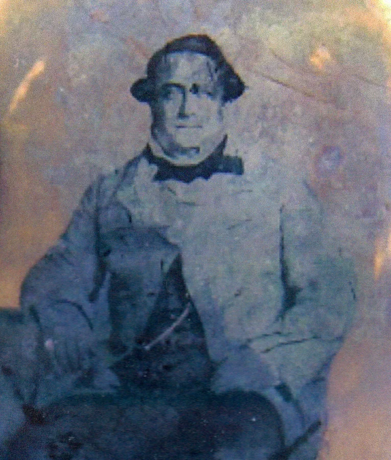

“What happens when a historian, a fine writer, and now an astute genealogist pierces the veil of a creole family whose roots reach back to the middle of the 18th century? An eye-opening and often engrossing glimpse of blended families, bathed in light and shade...
This is a book not just of historical reckoning. It is a reminder of how we tell stories to know ourselves. This telling is exemplary.”
Descendants
The Divided Lineage of a Louisiana Creole Family
Based on extensive genealogical and archival research, Descendants traces evolving attitudes and laws regarding racial identity and relationships in New Orleans over 250 years through the lives of descendants of a French couple who arrived in the city in the 1750s. Spanning eight generations, this work highlights the complexities of race in Louisiana, touching on those who were enslaved and those who were enslavers, those who were wealthy and those of fewer means, those who were of solely European descent and those with mixed European, African, and American Indian ancestry. The stories take the reader from colonial French and Spanish rule through the Civil War and Reconstruction and into the Jim Crow era of the twentieth century. Author John Durel culminates his research with a final chapter that juxtaposes his personal experience growing up middle class in the segregated South and a Black, working-class relative who labored at two jobs to provide for his family. Through it all, Descendants tracks the changing definition of what it meant to be Creole in New Orleans and the complex cultural, economic, and social connotations of one’s parentage.
“With masterful documentation and intimate reflection, Durel unfolds a generational story both typically Louisianian and uniquely his... As Durel discloses the sweep of family, he acknowledges the appropriation of family wealth, and he newly confronts the callousness of slavery’s legacies. Descendants is a history of connections, disconnections, and abrupt racial divisions: a timely tale.”
Descendants Gallery
Click the images below for more on the family
- 
-